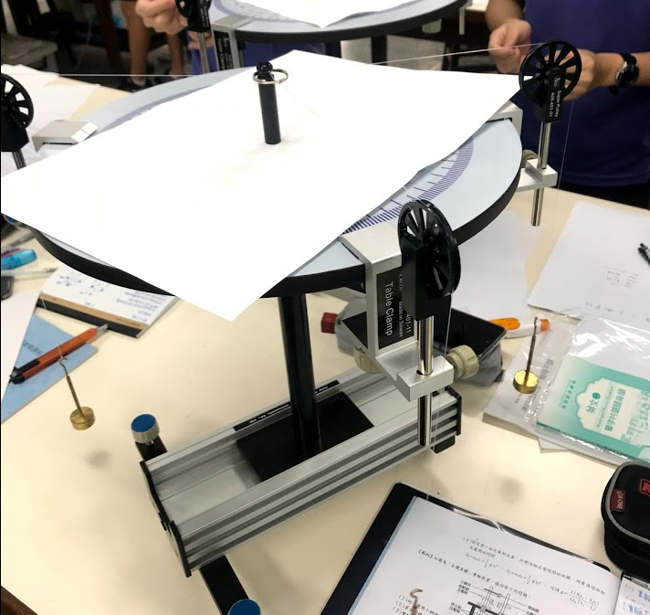

靜力平衡
實驗器材:
1.水平儀 2.力桌圓盤 3.滑輪
4.腳架 5.砝碼 6.細線
7.銅環 8.鋼珠 9.插栓
實驗目的:
1.用力桌設計同平面共點力的力平衡，驗證力的合成與分解
2.用力桌設計同平面剛體的平衡，研究非共點力的力矩平衡。
實驗原理:
一、靜力平衡
1.合力為0 — ΣF = 0
2.合力矩為0 — Σt = 0
二、力平衡
1.N力的向量合為0，則依向量之運算法可得一封閉的多邊形。
2.分解法:諸力的向量合為0，則各垂直分力Fx、Fy的向量和也必為0。
3.拉密定理:三力平衡，已知角度可使用 F1/sinΘ1 = F2/sinΘ2 = F3/sinΘ3 。
實驗步驟:
[實驗一]同平面共點力的力平衡
1.置水平儀於力桌圓盤上，調節腳架螺絲，使力桌保持水平狀態。
2.將三個滑輪，已不成直線的位置，裝置於圓盤周圍。
3.再將三個不同質量砝碼，接於力桌中心套在插栓的同環上。
4.記錄三力量值，(砝碼及掛鉤的質量)及三力間的夾角並與之分析。
5.重複2至5，以相同方法在做四力同平面共點力。
[實驗二]同平面非共點力的力平衡
1.將金屬製的圓盤平製於力桌上，使其中心保持重合。
2.將數個鋼珠置於圓盤上，並將有孔洞的圓盤置於鋼球上。
3.調整腳架螺絲，使力桌保持水平。
4.將三條細線的一端分別穿過三個滑輪，並繫於不同掛鉤上，再將另一端分別繫上不同插栓。
5.將兩個砝碼，加上適當砝碼。
6.調整第三個滑輪的位置與重量，直至圓盤拔去中心插栓後，不會發生移動或轉動。
7.在白紙上按照細線的位置畫線，記錄砝碼的重量並分析之。
實驗圖片:
